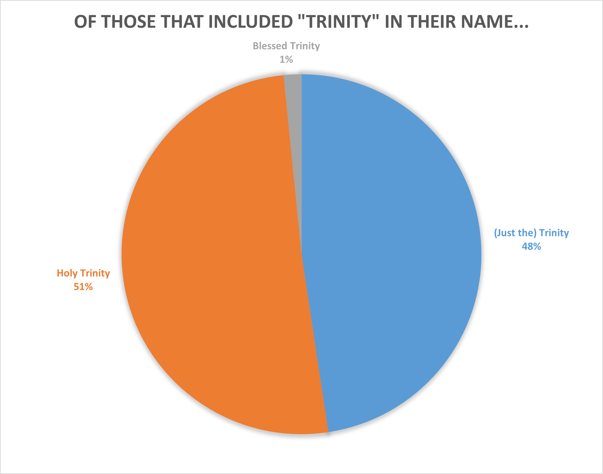
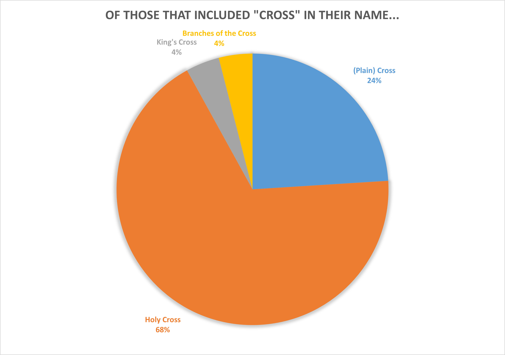

What are the most common names of parishes in the Anglican Church in North America?
The Background
Talk about the idea
The Data
I got the data (which was just names) from here: acna.org. There were 983 entities on that list, not all of which were churches. I did not carefully check if all were churches, but I did remove one senior center. Thus, I considered 982 churches.

Figure 1. This pie chart notes several of the most common categories that ACNA parish churches chose to name themselves after. This is not meant to be comprehensive. Main takeaways: almost one-third of churches are named after one or two specific saints. Almost one-quarter include "Christ" in their name in one of forms (e.g. Christ the King or Christ our Redeemer).

Figure 2. There are a lot of different saints that ANCA churches named themselves after. A .txt file list all instances, including saints with only one church named after them is here.

Figure 3. John was the disciple Jesus loved, but he is apparantly also the Evangelist Anglicans love.
Figure 4. *David here is not King David but St. David of Wales.
Poor Judas (not Iscariot) never gets churches named after him because his mom and dad gave him the fourth most common name of his time.
Figure 5. The Dark Ages are real haha. That big spike in books written in the BC period in 2019 was due to an Athenian playwrights kick.
The Genres
Figure 6. In 2018 (my last full year of high school), I read a ton of fiction, most of which was fantasy and science fiction. The plays were mostly Attic dramatists. My favorite book this year was probably Oathbringer, a fantasy novel.
Figure 7. I really stepped up the variety of my reading this year. The biggest factor in that was probably starting college (especially for the Philosophy segment). The plays this year were mostly the comedies of Aristophanes. My favorite book this year was Class by Paul Fussell, a satire of the American class system.
The Future
I'd like to read at least 40 books in 2022. I don't want the number to decrease and 40 in 2021 wasn't a huge burden. I would like to get the percent of the books written by women up to >40%. And I would like to read at least these five things from my waiting list.
1. Dramas by Eurpides, at least Medea, Bacchae, and Trojan Women
2. Devotions upon Emergent Occasions by John Donne
3. Silence by Shusaku Endo.
4. The Violent Bear It Away by Flannery O'Conner
5. The Death of Ivan Ilyich by Leo Tolstoy